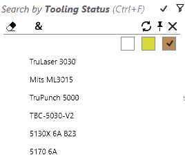

Alkatrész könyvtár szűrő
Alkatrészek szűrése felszerszámozási állapot szerint

Válassza a Felszerszámozási állapot keresőmezőt az alkatrészek felszerszámozási állapot szerinti szűréséhez. A legördülő menü az állapotokat színes jelölőnégyzetekként és gépekként jeleníti meg, ahol a Fehér szín
OK, a Narancssárga Hiba, a Sárga pedig Figyelmeztetés állapot. Az Összesre alkalmaz (&) gomb használata ebben az esetben engedélyezett, hogy a szűrőfeltételek az összes kiválasztott gépre érvényesek legyenek.
| Szűrő | Leírás |
|---|---|
 |
Azokat az alkatrészeket jeleníti meg, amelyek legalább egy felszerszámozási hibával rendelkeznek. |
|
A TruLaser 3030 géppel nem vágható alkatrészeket jeleníti meg. |
|
Vágás nem lehetséges: Ezeket az alkatrészeket egyetlen vágógéppel sem lehet vágni (figyeljen az „&” jelölésre itt). |
|
Hajlítási hibák: Az alkatrészek nem gyárthatók, mert nincs érvényes hajlítószerszám. |
|
CSAK lengőhajlítás: Ezek az alkatrészek csak akkor munkálhatók meg, ha rendelkezésre áll megfelelő lengőhajlító szerszám. Ezeket egyetlen élhajlító gépen sem lehet elvégezni. |


Alkatrészek szűrése hajlítási rögzítés szerint
Válassza a Hajlítási rögzítések mezőt, ha alkatrészeket hajlítási rögzítés szerint szeretne keresni.
-
Az ehhez a mezőhöz tartozó legördülő menüben megjelenik a hajlítószerszámok listája. Válasszon egy szerszámot az azt használó alkatrészek listájának kereséséhez.
-
A legördülő menüben megjelenő szerszámlistát szűkítheti a szerszám neve, típusa (bélyeg, hattyúnyak, sugár stb.,) és leírása alapján.
-
Válasszon több szerszámot, és alkalmazza az ÖSSZES (&) módosítót, hogy listázza az összes alkatrészt, amely mindkét szerszámmal rendelkezik.
-
Válasszon ki egy alkatrészt, majd kattintson duplán a részletek megnyitásához, kiemelve az alkatrészben használt más szerszámokat MINDEN hajlítógépre vonatkozóan. A szerszám leírása frissül a rögzítés részleteivel.
-
Kattintson duplán a gépre, ezzel kiemelve a kiválasztott alkatrészhez használt hajlítószerszámokat a kiválasztott géphez.
Az egérmutatót a hajlítási rögzítő szűrőgombjára helyezve megjelenik egy elemleírás a kiválasztott szerszámok ikonjaival. A szerszámok számát körülvevő szögletes zárójel „MINDEN”, míg a kis zárójel BÁRMELY egyezést jelent.

Alkatrészek szűrése használt szerszám szerint
Ez megegyezik a használt rögzítések szerinti szűréssel, kivéve:
-
A szerszám ikonok arányos méretben vannak megrajzolva (nem pontosan arányosak).
-
Amikor a szerszámok előnézete meg van nyitva, az egérmutatót a kijelölt szerszámok fölé mozgatva a megfelelő felszerszámozások kiemelésre kerülnek az előnézet ablakban.
Alkatrészek szűrése állapot szerint
A könyvtárban lévő alkatrészek mostantól Állapot szerint is szűrhetők. Az opciók listája az ÖSSZES alkalmazható állapotot megjeleníti, ezért a könyvtárban szereplő alkatrészek listájától és azok aktuális állapotától függően változik. Válassza a Hiányzó anyag lehetőséget a megoldatlan anyagi állapotú alkatrészek listázásához.
Alkatrészek szűrése hibakódok szerint
A státusz és a gépek kombinációjával mostantól a felszerszámozásokhoz tartozó Hibakódok is felhasználhatók a Felszerszámozási állapot szerinti kereséshez.
Az alábbi ábra a keresési forgatókönyvet szemlélteti: Túlterheléses felszerszámozási hibák a 5170 6A gépen.
A hibalista a gép- és állapotválasztáshoz tartozó hibákat jeleníti meg. A keresés pontosságának javítása érdekében a gép és az állapot kiválasztásának módosításakor frissül. Tehát, ha egy stancológéphez figyelmeztetés állapotot választ, akkor a hibalistában csak a rendelkezésre álló stancolási figyelmeztetések jelennek meg.
Elrejtett állapot szűrő
Gyakran előfordul, hogy a szerszámok túl nagy mérete vagy vastagsága miatt el kell rejteni az alkatrészek felszerszámozásait. A szerszámok akkor is rejtve vannak, ha egy CAD útvonalon azok kifejezetten le vannak tiltva. JFY Plus megjeleníti az elrejtés okát a szerszám elemleírásában. Ezen alkatrészeket a Felszerszámozási állapot keresés menü újonnan hozzáadott Elrejtett állapot mezőjével is kereshetjük.